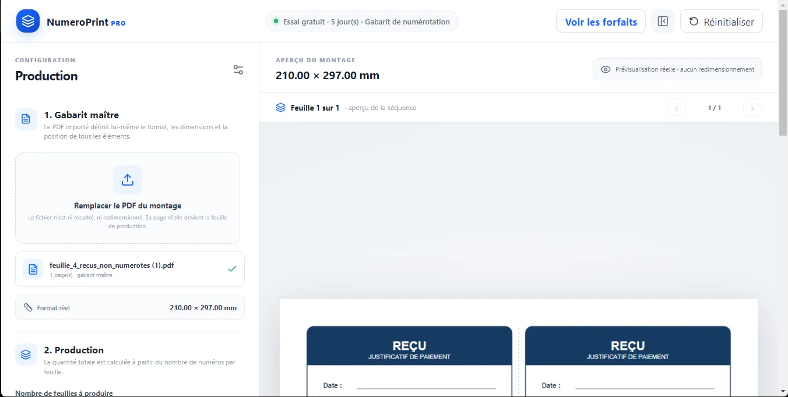
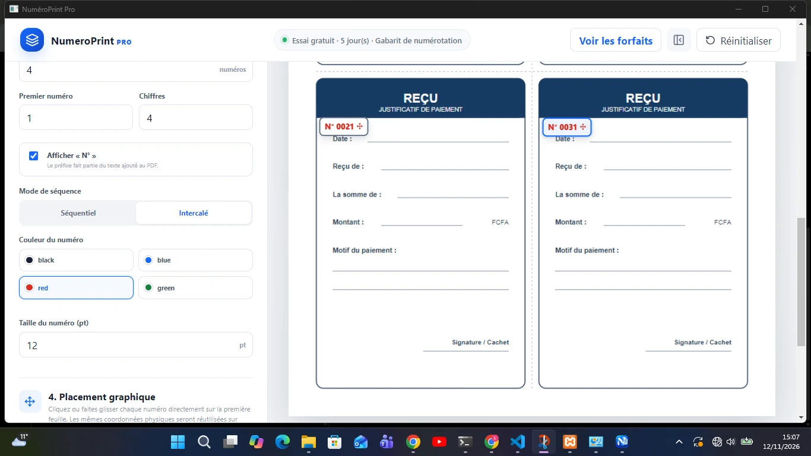
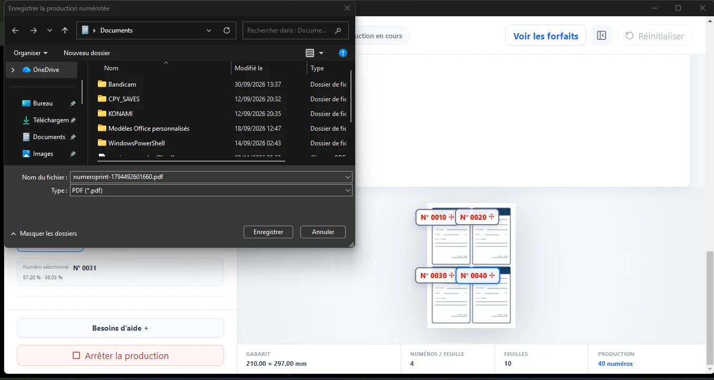

Import de PDF
Utilisez votre document PDF comme gabarit maître. Le format et les dimensions d'origine sont conservés.
NumeroPrint Pro est un logiciel Windows de numérotation automatique de PDF. Importez vos gabarits de reçus, tickets et carnets, définissez vos numéros par feuille, positionnez-les avec précision et exportez un PDF prêt à imprimer.

De la préparation du gabarit jusqu'au fichier final, retrouvez les outils essentiels dans une seule application.
Utilisez votre document PDF comme gabarit maître. Le format et les dimensions d'origine sont conservés.
Définissez le premier numéro, le nombre de chiffres et le préfixe à afficher sur chaque reçu ou ticket.
Choisissez une numérotation séquentielle ou intercalaire selon votre méthode de production.
Déplacez les numéros directement sur la feuille pour les positionner précisément sur vos documents.
Visualisez le résultat avant de lancer la production et contrôlez la disposition de vos numéros.
Enregistrez votre production numérotée au format PDF pour l'imprimer ou la partager.
Trois étapes pour passer de votre gabarit à un document prêt à imprimer.
Chargez le PDF qui contient vos reçus, tickets ou autres éléments à numéroter.
Choisissez la quantité, le premier numéro, le format des chiffres, la couleur et le mode de séquence.
Ajustez le placement sur l'aperçu, lancez la production et enregistrez le PDF final.
Une interface claire pour garder le contrôle sur chaque étape de votre travail.

Définissez le nombre de numéros à placer sur chaque feuille, puis positionnez-les sur la première page de votre gabarit. NumeroPrint Pro reprend ce placement sur les feuilles suivantes et vous permet de contrôler le résultat avant l'export PDF. Le format et les dimensions du PDF importé sont conservés.

NumeroPrint Pro rassemble les étapes de préparation, de numérotation et d'export dans une application de bureau pour Windows.
Importez le gabarit qui contient déjà la mise en page de vos reçus, tickets ou carnets. Le document importé sert de base à la production : ses dimensions et son format d'origine sont respectés.
Choisissez le nombre de numéros à imprimer sur chaque feuille, le numéro de départ, le préfixe, le nombre de chiffres, la taille et la couleur. Vous pouvez utiliser une séquence classique ou un mode intercalaire.
Placez les numéros sur la première feuille à l'endroit souhaité. Le même placement est repris sur les feuilles suivantes. Vérifiez l'aperçu, puis exportez le résultat au format PDF pour l'impression.
Ce logiciel s'adresse notamment aux personnes, commerces, associations et organisations qui préparent régulièrement des reçus, carnets ou tickets numérotés.
Les réponses aux questions courantes sur la numérotation de documents PDF avec NumeroPrint Pro.
Non. NumeroPrint Pro est une application de bureau conçue pour être utilisée sur un ordinateur Windows.
Vous pouvez importer un gabarit PDF contenant des reçus, des tickets, des carnets ou d'autres documents destinés à être numérotés et imprimés.
Oui. Vous définissez le nombre de numéros à placer sur chaque feuille, puis vous réglez leur position sur la première feuille. Ce placement est repris sur les feuilles suivantes.
Oui. Vous pouvez régler le numéro de départ, le préfixe, le nombre de chiffres, la taille et la couleur, puis choisir une numérotation séquentielle ou intercalaire.
Oui. Le PDF importé sert de gabarit et ses dimensions ainsi que son format d'origine sont conservés pendant la préparation de la numérotation.
La production est exportée au format PDF, prêt à être imprimé ou partagé.
Cliquez sur l'un des boutons de téléchargement du site. Le programme d'installation est hébergé sur OneDrive et le site NumeroPrint Pro reste ouvert pendant le lancement du téléchargement.
Téléchargez NumeroPrint Pro et préparez vos documents numérotés depuis votre ordinateur Windows.
Application de bureau pour Windows · Téléchargement hébergé sur OneDrive
Le téléchargement démarre depuis cette page. Vous restez sur le site pendant la récupération du fichier.
NumeroPrint Pro est un projet conçu pour rendre la numérotation de documents imprimés plus accessible. L'objectif : proposer une solution simple et efficace aux personnes, entreprises et organisations qui produisent régulièrement des reçus, tickets ou carnets.
Une application développée avec le souci du détail, de la précision et de la facilité d'utilisation.
Étudiant à l’IUGET · Concepteur et développeur de NumeroPrint Pro
jamesngnimpea06@gmail.com